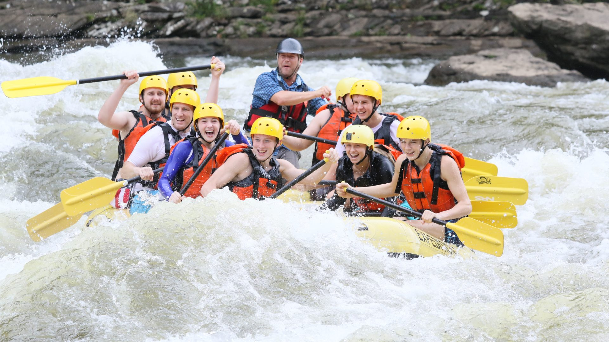

Top 10 Best Places for Rafting in the USA
1. Snake River (Wyoming)

2. Colorado River (Arizona)
3. Gauley River (West Virginia)

The top ten complete is:
4. Salmon River (Idaho), 5. Kennebec River (Maine), 6. Youghiogheny River (Pennsylvania), 7. Arkansas River (Colorado and Arkansas), 8. Rogue River (Oregon), 9. Nenana River (Alaska), 10. Chattooga River (Georgia).
Join Us